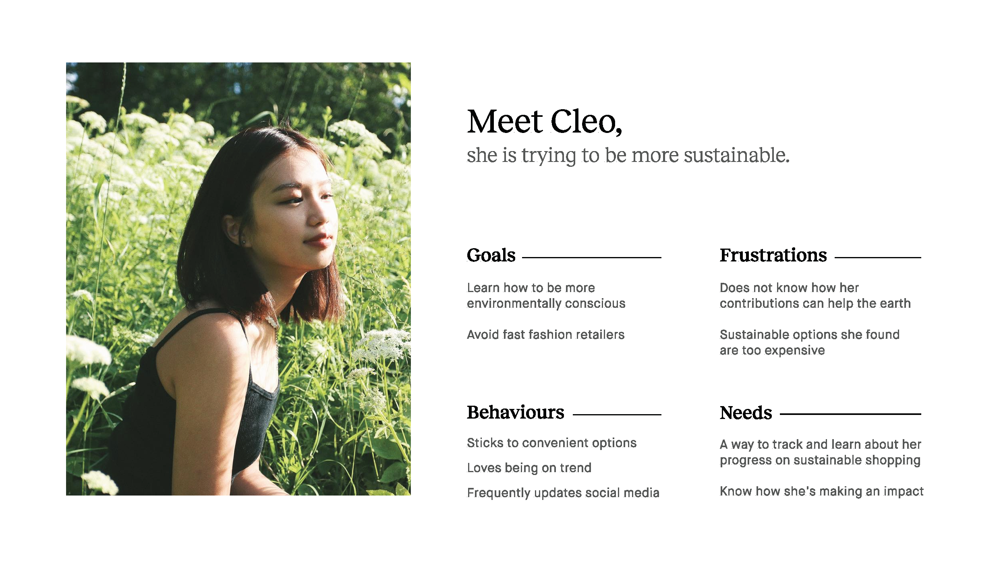

ROLE
Interaction Design, Interface Design, UX Research, Prototyping
TEAM
Ashley Yien, Darya Tyugay, Justin Yang, Tracy Chen, Zoe Fortune
TOOLS
Figma, Protopie
Care to Wear is an application that tracks your resource consumption based on the clothing you purchase. The app aims to show the direct link between clothing consumption and the environment while also providing methods for finding clothes more sustainably that do not break the bank.
This project is the outcome of a 4-week, senior level interaction design class. The goal of the project was to research, propose and design and interactive system for a specific domain and context.
Problem
The fast fashion industry is the second largest polluter of clean water in the world and negatively impacts our environment. Each year, 150 billion clothing items are produced while 26 billion pounds of textile end up in landfills. In Vancouver alone, we produce over 40 million pounds of clothing waste every year. We chose sustainable fashion as our focus to empower individuals to lead a more sustainable lifestyle and be more aware of their clothing consumption attitudes.
Research
Our initial research began with conducting a survey and multiple interviews to investigate the various views of fashion sustainability. We surveyed a group of 92 people ranging from ages 18 – 70 and asked them questions related to their previous fashion sustainability knowledge and experiences.
The next research phase consisted of interviews with 2 males and 4 females ranging from 20 – 21 who lead a sustainable lifestyle.
From our research, we were able to identify patterns of goals, frustrations and behaviors that allowed us to better understand how we can improve and move forward with creating a better experience of sustainable fashion for people. A persona was created based of our research strategies.
Design Principles
BE ENCOURAGING
Encourage users that any action towards being more sustainable, no matter how small, is important. They should not feel guilty if they are doing the best they can.
DO NOT ALIENATE USERS
There is wide spectrum of knowledge on sustainability, we aim to provide information in such a way that it does not scare apprehensive users away
Solution
Care to Wear is an app designed to empower individuals to lead a sustainable lifestyle by promoting and tracking conscious consumption of clothes.
My primary role throughout this project was prototyping and being one of the interface designers. As an interface designer, my responsibility was to design the interface layout of the home landing screen – the summary tracking page.
IAT 334 - Care To Wear from Darya Tyugay on Vimeo.
Reflection
From this project, I have learned how important user research and user testing is when designing app. These strategies help us better understand our audiences' goals and frustrations and allows us to design a more positive experience. In addition, while designing Care to Wear I have gained a new outlook on sustainability and how it impacts the environment.